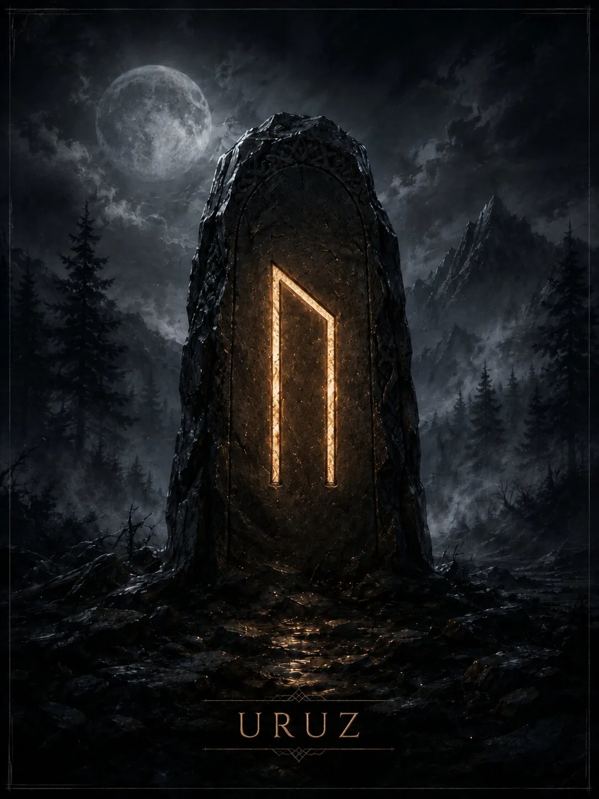

Руна сырой силы, жизненного импульса и способности выдержать давление. В мантике показывает запас воли, интенсивность процесса и переход от потенциальной силы к действию.
Краткая суть
Руна сырой силы, жизненного импульса и способности выдержать давление. В мантике показывает запас воли, интенсивность процесса и переход от потенциальной силы к действию.
Историческая традиция
Реконструкция *ūruz обычно соотносится с диким быком/туром по англосаксонской традиции, однако северные рунические поэмы дают иные образы, поэтому буквальное значение имени не абсолютно бесспорно. Современная школа закрепила за Uruz значения силы, выносливости и первичного импульса.
- Ключевые значения: сила, воля, потенциал, напор, выносливость, инстинкт, перемена, формирование
Современная мантика
Мантические значения относятся к современной рунической практике.
- Положительное проявление: Прилив сил, возможность совершить прорыв, смелое начало, способность выдержать трудную фазу.
- Негативное проявление: Неуправляемый напор, давление, грубость, переоценка сил или наоборот ощущение бессилия.
- Совет: Используй силу направленно: выбери цель и не трать импульс на бессмысленное сопротивление.
- Предупреждение: Сила без меры превращается в разрушение, а подавленная сила — в пассивность.
- Итог ситуации: Сильный сдвиг, испытание на прочность, формирование новой позиции.
Психологическое состояние
Мобилизация, внутренний подъём, желание доказать способность справиться; в тени — раздражительность и борьба со всем подряд.
Духовное значение
Освоение собственной силы: не подавлять её и не позволять ей управлять человеком вместо сознательной воли.
Прямое и перевёрнутое положение
Мантическая трактовка и работа с перевёрнутыми положениями относятся к современной рунической практике. Для Старшего Футарка не сохранилось древнего руководства, которое задавало бы такой способ гадания как единственно правильный. Перевёрнутая Uruz в современной практике — ослабление импульса, неверно выбранное применение силы, зависимость от более сильной стороны или упущенная возможность.
Отличия трактовок разных школ
Историческая основа имени неоднозначнее, чем популярный образ «дикого быка». Современные авторы сходятся на теме силы, но различаются в том, считают ли её созидательной, нейтральной или опасной.
Итог
Руна сырой силы, жизненного импульса и способности выдержать давление. В мантике показывает запас воли, интенсивность процесса и переход от потенциальной силы к действию.
Финансы
активная борьба за доход, рискованные решения, потребность усилить материальную базу; не лучший символ пассивного накопления.
Работа
высокая нагрузка, конкуренция, запуск сложного проекта, физически или волево требовательная задача.
Отношения
сильное притяжение, страсть, прямота; в тени — давление и борьба за доминирование.
Семья и быт
необходимость быстро мобилизоваться, решать проблему своими силами, перестраивать привычный порядок.
Руна как характеристика человека
Сильный, прямой, деятельный человек; часто сначала действует, потом анализирует.
- Мысли: «надо брать ситуацию в руки»; оценивает препятствия как вызов.
- Чувства: интенсивные, телесно ощутимые, иногда трудно контролируемые.
- Действия: активные, напористые, с попыткой быстро изменить ситуацию.
Современное магическое значение
Это современная эзотерическая практика, а не исторически подтверждённая традиция.
- Современная магическая трактовка: придание формуле мощности, ускорение преобразования, укрепление воли.
- Задачи: прорыв, стойкость, усиление личного действия, преодоление инерции.
- Усиливает: решительность, напор, способность менять форму ситуации.
- Ослабляет: пассивность, нерешительность, застывшие модели поведения.
- Риск: формула может стать слишком жёсткой, конфликтной или неконтролируемой.
Руна в формулах и ставах
Uruz используют как усилитель и толчок. Примеры современной логики: Uruz+Tiwaz — волевой прорыв; Uruz+Raidho — энергичное продвижение; Uruz+Berkano — рост через активную перестройку.
Эзотерическая трактовка
В современной эзотерической трактовке
В эзотерической диагностике перевёрнутая или конфликтная Uruz иногда трактуется как истощение, «пробой» или подавление воли.
Возможное бытовое объяснение
Альтернативное объяснение
Бытовая альтернатива: переутомление, конфликтная среда, психологическое давление, отсутствие ясной цели. Сначала проверяются обычные причины.
Характерные сочетания
- Uruz + Tiwaz: сила, направленная к победе.
- Uruz + Hagalaz: мощный кризис, трудно контролируемая перестройка.
- Uruz + Gebo: сильное взаимное притяжение или энергичный союз.
Руна в формулах и ставах
Uruz используют как усилитель и толчок. Примеры современной логики: Uruz+Tiwaz — волевой прорыв; Uruz+Raidho — энергичное продвижение; Uruz+Berkano — рост через активную перестройку.
Мантические, магические и диагностические значения относятся к современной рунической практике. Историческая часть опирается на рунические поэмы и эпиграфику. Материалы носят справочный и развлекательный характер.